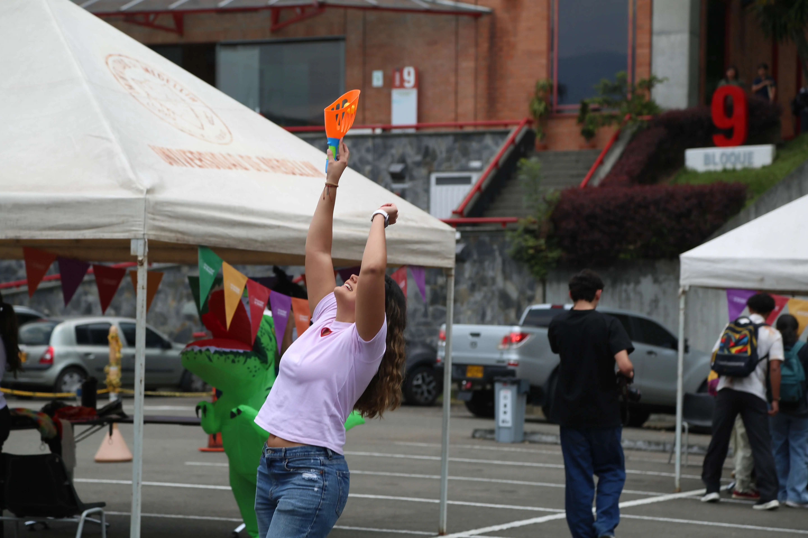
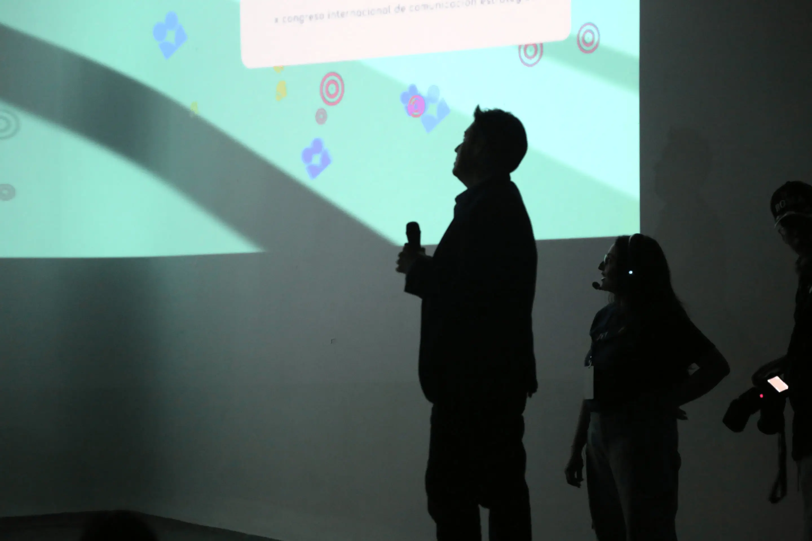
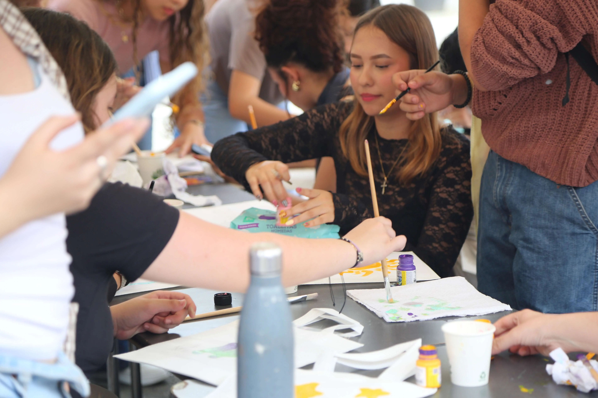
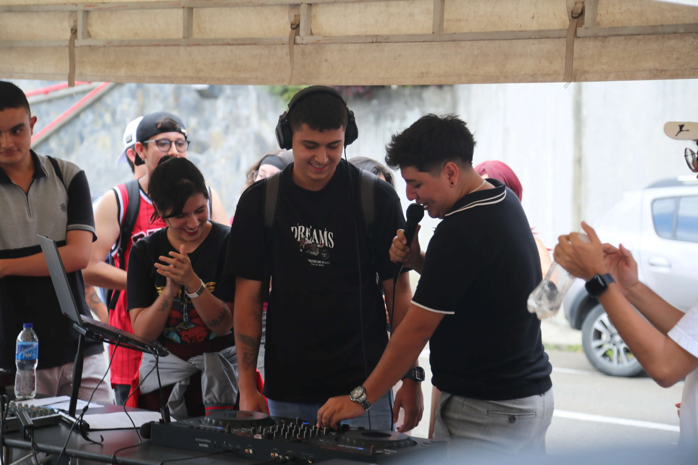
Asignatura
Enfásis II: Logística de eventos
Docente
Nora Elena Botero Escobar
La décima edición del Congreso Internacional de Comunicación Estratégica (Stratcom) transformó el campus de la Universidad de Medellín en una experiencia participativa. A través de intervenciones urbanas, estaciones por pregrado, gamificación y cultura, conectamos a la comunidad desde formatos interactivos.
Integrantes del proyecto
-
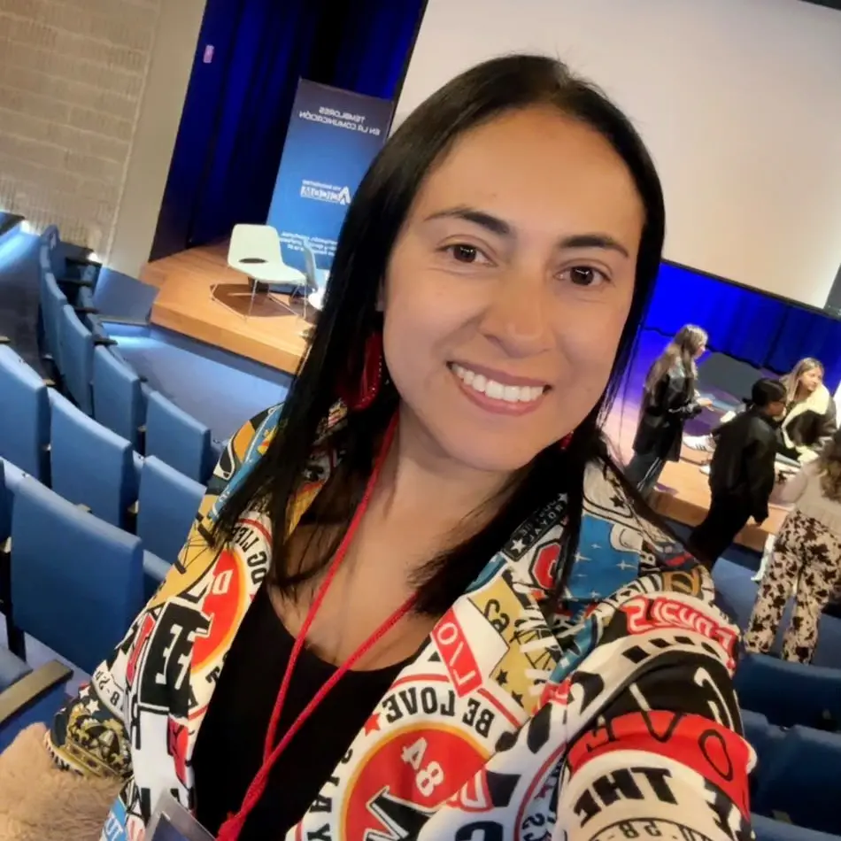
Carolina Guerra
Córdoba -
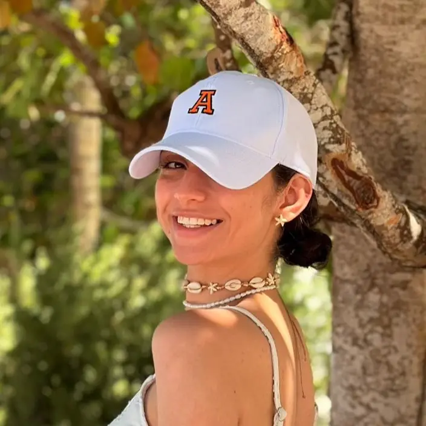
Valentina Bustamante Sánchez -
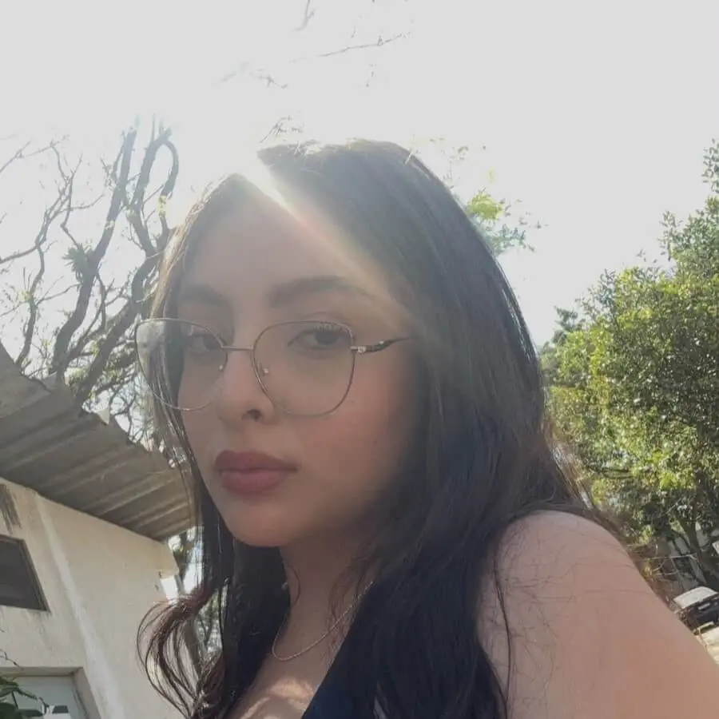
Mariana Uribe
Parra -
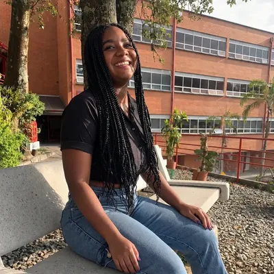
Juliana Vanessa
Riascos Romero -
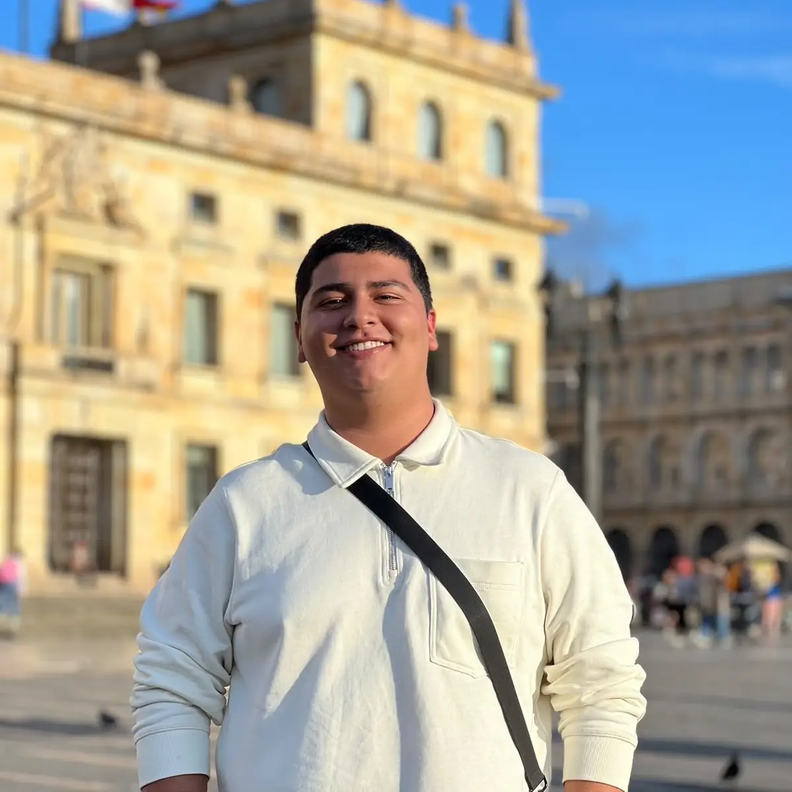
Pablo
Moreno -
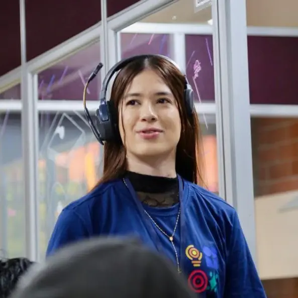
Laura Zapata
Arboleda -
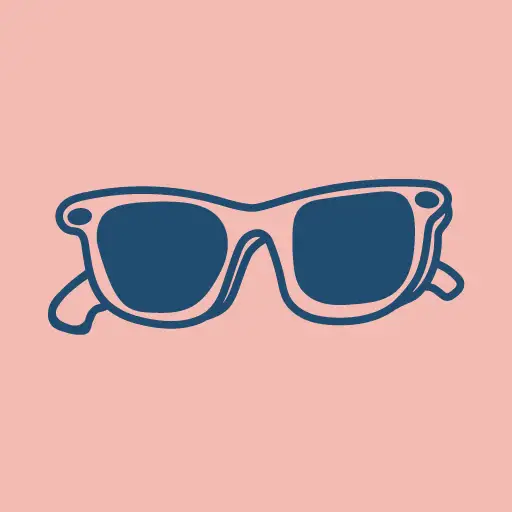
Sofia Naranjo
Franco